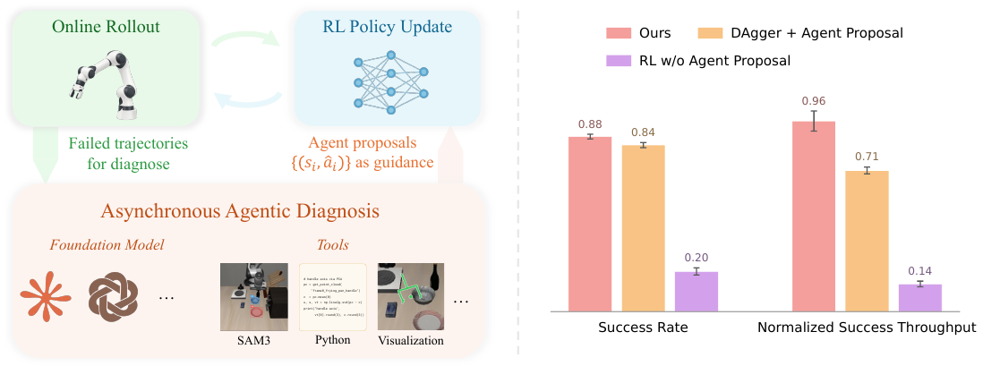
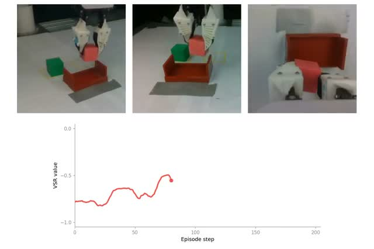
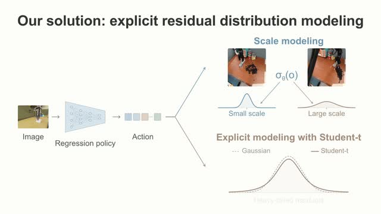
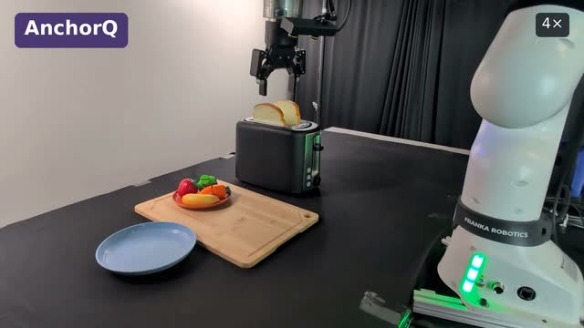
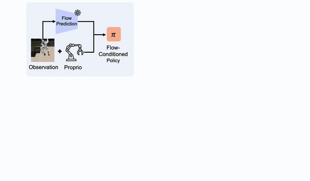
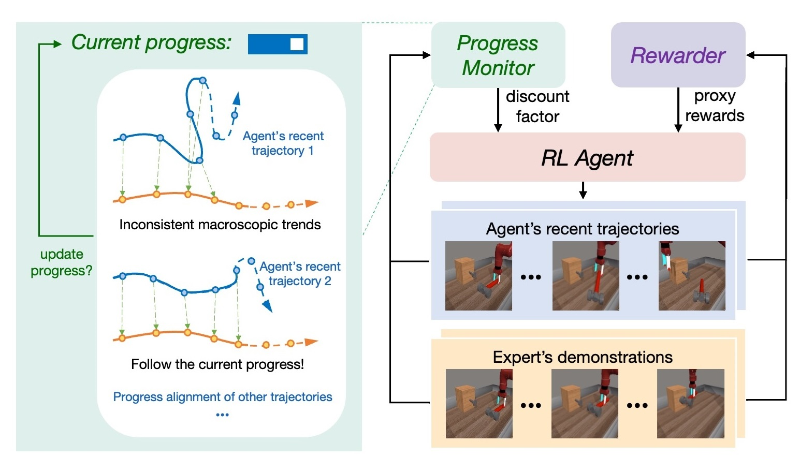
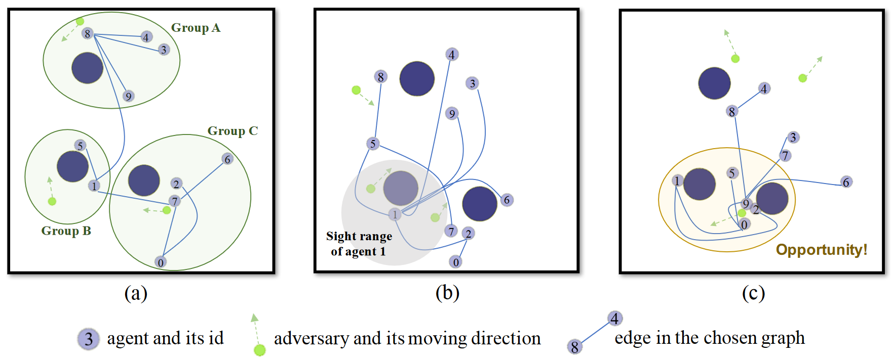
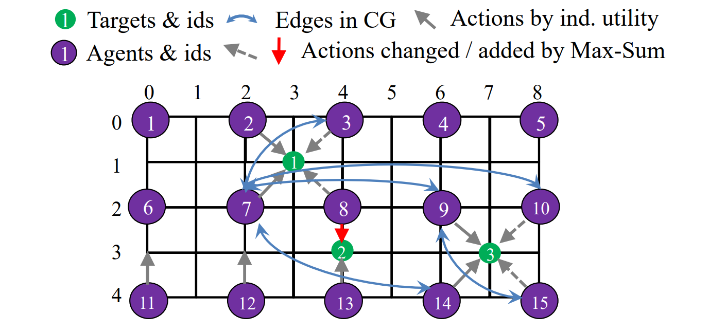

Hi! I am a second-year Ph.D. student at the University of California, San Diego, where I am advised by Prof. Henrik Christensen. I was previously advised by Prof. Hao Su.
Before this, I completed my M.S. and B.Eng. degrees at the Institute for Interdisciplinary Information Sciences (IIIS), Tsinghua University, where I was advised by Prof. Yang Gao and Prof. Chongjie Zhang.
My research aims to enable robots to perform general-purpose manipulation reliably and efficiently in the real world. My current focus is on learning from real-world interaction (e.g., real-world RL and hindsight imitation) and acquiring priors to make such learning more effective (e.g., through sim-to-real transfer and foundation-model agents).
Publications
* indicates equal contribution.

Weijun Dong, Carl Qi, Mingyuan Zhang, Manikantan Nambi, Lillian J. Ratliff, Jeroen Vanbaar†, Dylan Randle†, Jose Barreiros†
CoRL 2026 R2RL & CSIR Workshops
paper

Weijun Dong*, Yilin Wang*, Jiawei Fu, Yuchen Zhou, Henrik I. Christensen, Zhao-Heng Yin†, Hao Su†
Preprint, 2026
project page / paper

Yuchen Zhou*, Jiacheng You*, Weikang Wan, Weijun Dong, Yang Gao, Jiayuan Mao
Preprint, 2026
project page / arXiv

Carl Qi, Weijun Dong, Xiaojie Wang, Peiyi Chen, Rahul Sajnani, Mingyuan Zhang, Amy Zhang, Jose Barreiros, Manikantan Nambi, Lillian J. Ratliff, Dylan Randle
Preprint, 2026
project page / arXiv

Yitian Zheng*, Zhangchen Ye*, Weijun Dong*, Shengjie Wang, Yuyang Liu, Chongjie Zhang, Chuan Wen†, Yang Gao†
ICLR 2026
project page / paper / code

Yuyang Liu*, Weijun Dong*, Yingdong Hu, Chuan Wen, Zhao-Heng Yin, Chongjie Zhang, Yang Gao
ICLR 2024
project page / paper / code

Qianlan Yang*, Weijun Dong*, Zhizhou Ren*, Jianhao Wang, Tonghan Wang, Chongjie Zhang
ICML 2022
paper / code

Tonghan Wang*, Liang Zeng*, Weijun Dong, Qianlan Yang, Yang Yu, Chongjie Zhang
ICLR 2022 (Spotlight)
paper / code
Miscellaneous
I participated in competitive programming during middle school and high school.
In my spare time, I enjoy playing soccer!